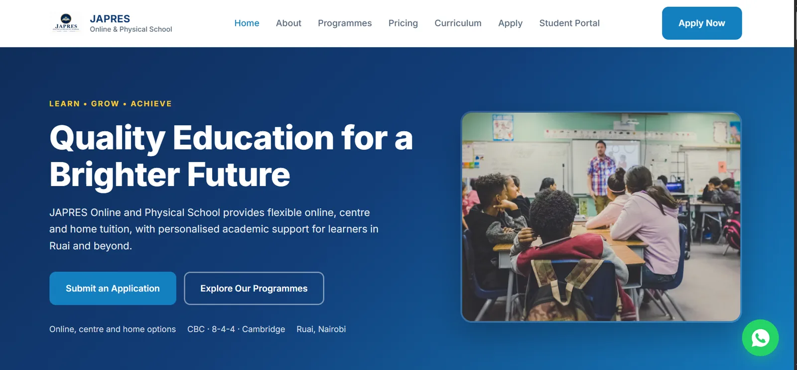

↗
Data analytics
Cleaning data, measuring performance and presenting clear reports and dashboards so decisions can be based on evidence rather than guesswork.
Explore Data ServicesI build professional websites, practical software systems and data solutions that help businesses and organisations solve real problems and work with greater clarity.

I bring together data analytics, software development, web design and workflow automation. Every project starts with the same principles: understand the need, choose the right approach and build something useful, clear and maintainable.
Cleaning data, measuring performance and presenting clear reports and dashboards so decisions can be based on evidence rather than guesswork.
Explore Data ServicesBuilding small, practical applications and internal tools that reduce repetitive work and keep everyday operations organised.
Explore Software ServicesDesigning and building professional, responsive websites that explain what an organisation does and make it easy for people to get in touch.
Explore Web ServicesStreamlining repeatable digital tasks and connecting everyday tools so less time is spent moving information by hand.
Explore Automation ServicesA selection of client work, independent projects and hands-on analysis. Each project is labelled clearly so you can see what was delivered, what is personal work and what is still evolving.

A public school website paired with a student portal and an administrative experience for an education client.
View JAPRES Academy Case Study
An 800-order Kenyan retail dataset explored in Excel through data preparation, PivotTables, performance measures and clear reporting.
View Sales Analysis Case Study
A self-initiated analytics brand and website project, developed to explore positioning, service presentation and user journeys.
View Aldermere Analytics DetailsI am studying Economics and Statistics at the University of Nairobi. That analytical foundation complements the practical skills I develop through software, web and data projects.
I prepare data, explore patterns and present results in reports and dashboards that are easy to read and act on.
I write code to build applications, business systems and automations that save time and reduce manual work.
I design and build websites that look professional, work well on every device, and present information clearly.
Every project starts with a conversation. Scope, timeline and cost are agreed in writing before work begins so expectations stay realistic on both sides.
Share the challenge, the people involved and the outcome you need. This is where the real requirement becomes clear.
Agree on deliverables, exclusions, timeline and a written quotation before any development starts.
Develop the solution, review milestones together, test the result and hand over clear documentation.
Practical writing on technology, data, software and business — focused on clear explanations, grounded examples and ideas that can be put to use.
Whether you need a professional website, a practical business system, or help turning your data into clear reports and dashboards, I am available to discuss the scope and approach.
Start a conversation